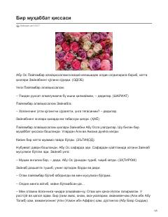

BMZaynab va Abu Osning iymon va sadoqatga to'la hayot yo'li haqidagi ta'sirli qissa.
Ushbu asar Payg'ambarimiz Muhammad (s.a.v)ning qizlari Zaynab va ularning turmush o'rtoqlari Abu Os o'rtasidagi sadoqat, muhabbat va iymon yo'lidagi sinovlar haqida hikoya qiladi. Kitobda er-xotinning Islomni qabul qilish jarayonidagi qiyinchiliklari va bir-birlariga bo'lgan yuksak hurmati yoritilgan.